Zabawki możecie zbierać już od 1. rundy. Na mapie jest 8 możliwych miejsc, w których się pojawiają, ale potrzebujecie tylko 5:
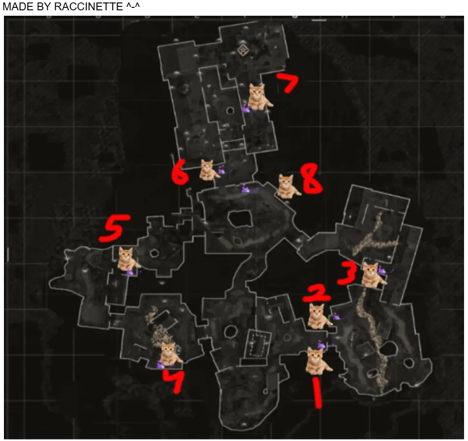
CREDITS: RACCINETTE
Gate House (Stróżówka): Sprawdź miejsce, w którym wychodzisz z budynku.
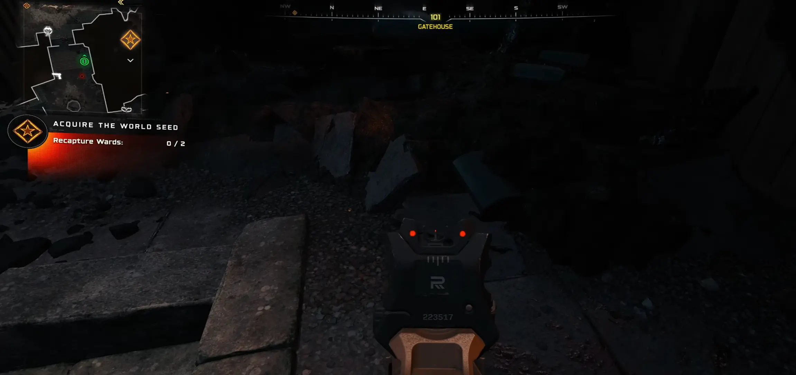
Flower Garden (Ogród kwiatowy): Tuż przed jednym z punktów odradzania się zombie.
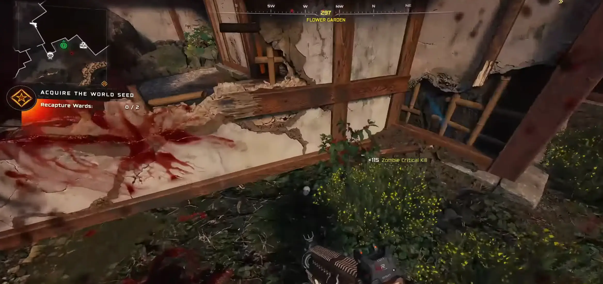
Kitchens (Kuchnie): Ukryta za wazą.
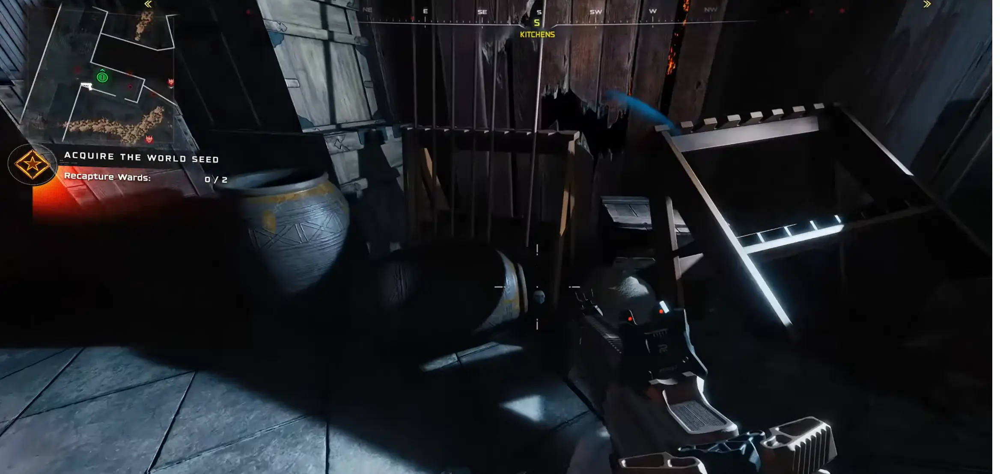
Central Courtyard (Dziedziniec): Bezpośrednio w pęknięciu z lawą.
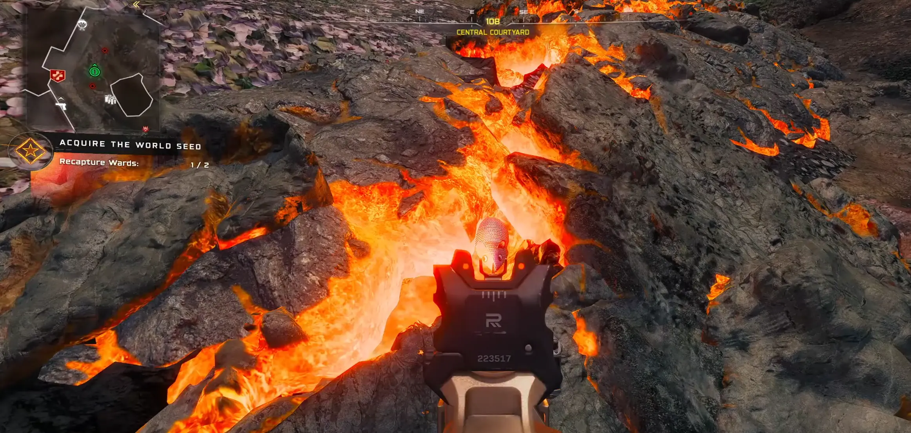
Training Area (Obszar treningowy): Tuż za skrzynią z amunicją.
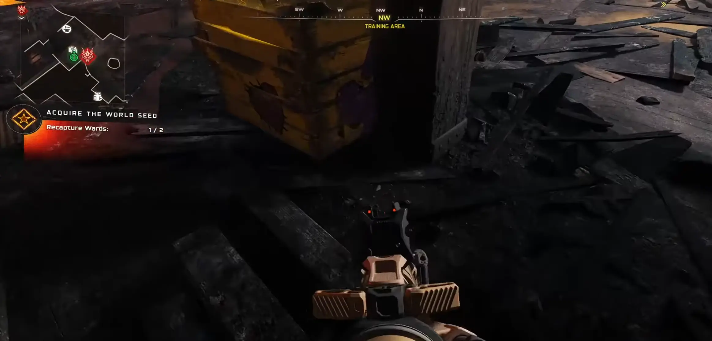
Stables (Stajnie): Wewnątrz budynku, przed miejscem spawnu zombie.
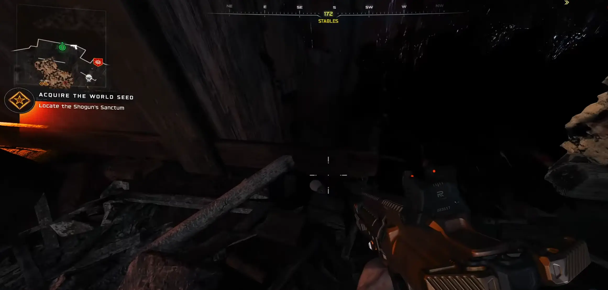
Tenshu Entrance (Wejście Tenshu): Na szczycie kafelków i drewna.
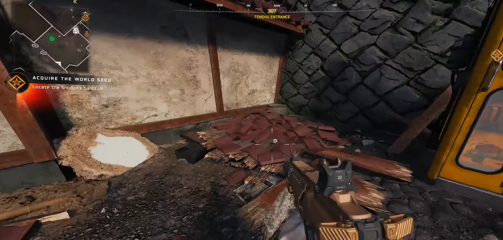
Onsen Baths (Łaźnie): Na drewnianym stołku przed maszyną do ulepszeń żywiołów.
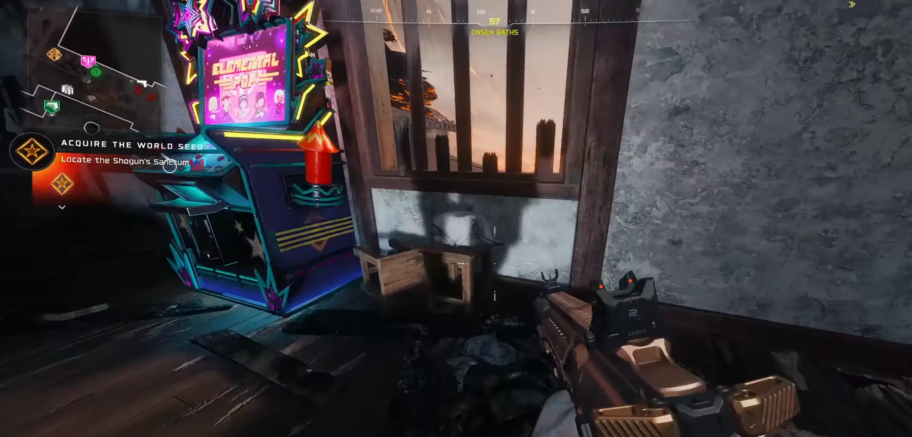
KROK 2: Wystrasz koty (8 lokalizacji)
To trudniejszy etap. Koty pojawiają się pojedynczo. Gdy wystraszysz jednego, musisz odczekać od 1 do 3 rund, aż kolejny pojawi się w nowym miejscu. Aby wystraszyć kota, musisz popatrzeć na niego kilka sekund lub strzelić w jego kierunku.
Central Courtyard (Dziedziniec): Za punktem spawnu zombie.
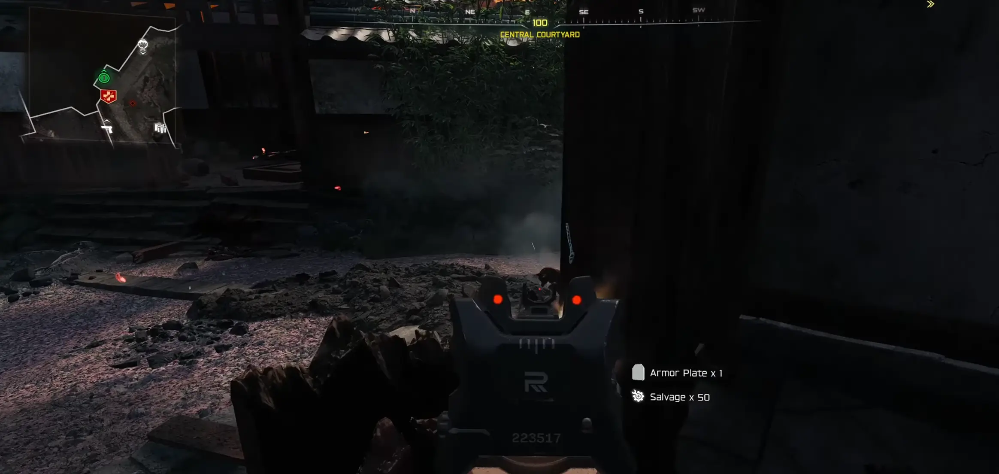
Kitchens (Kuchnie): Z tyłu, przed lampą.
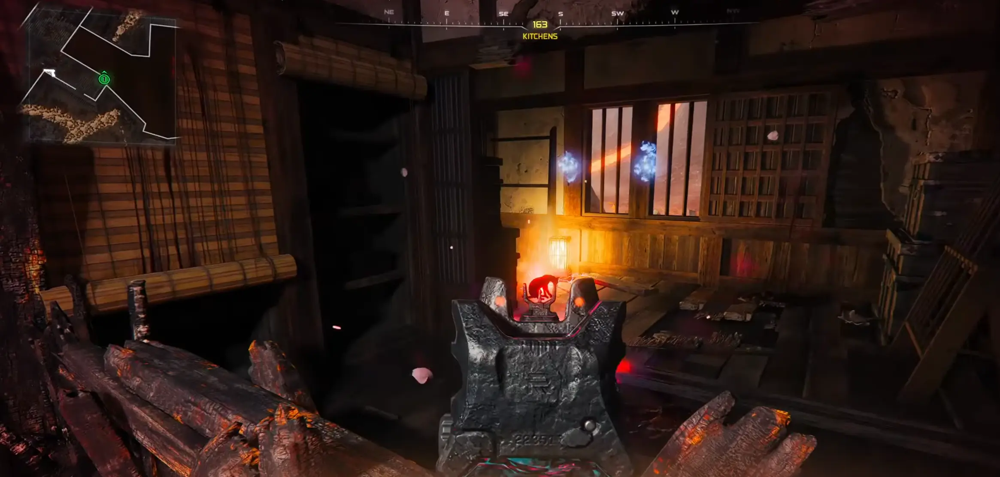
Tenshu Entrance (Wejście Tenshu): Na dachu jednego z budynków.
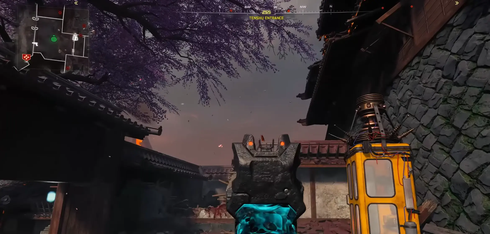
Flower Garden (Ogród kwiatowy): Za barierą zombie.
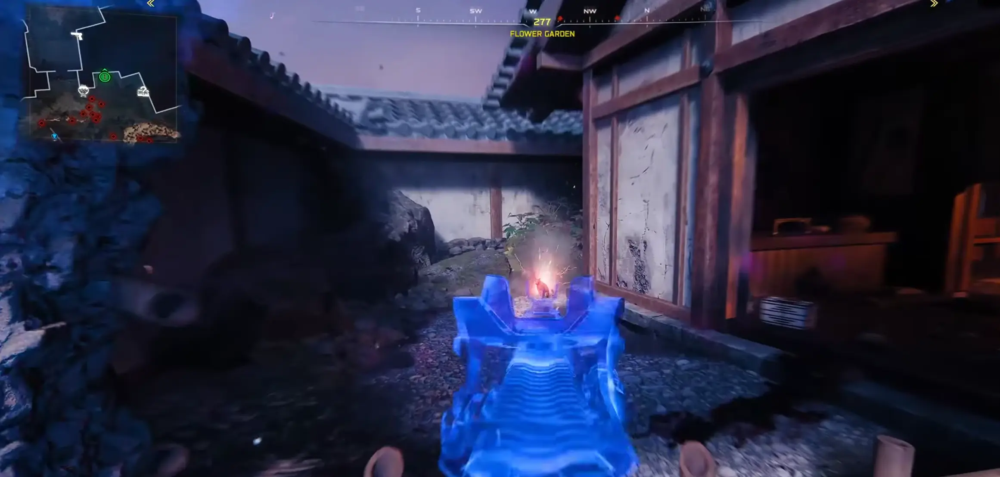
Stables (Stajnie): Na dachu budynku stajni.
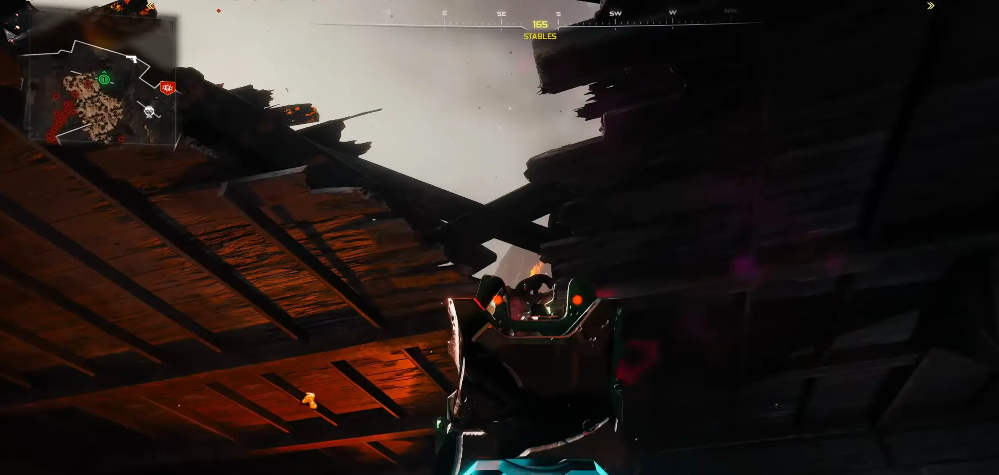
Gate House (Stróżówka): Wewnątrz budynku, gdzie wychodzą zombie.
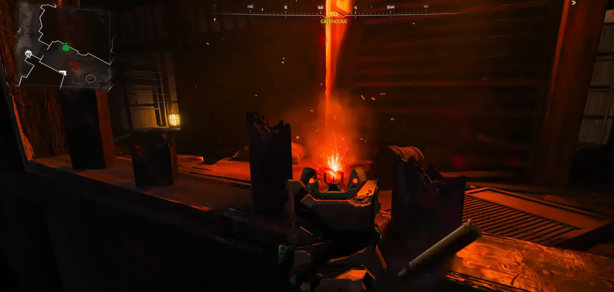
Training Area (Obszar treningowy): Na dachu nad skrzynią z amunicją.
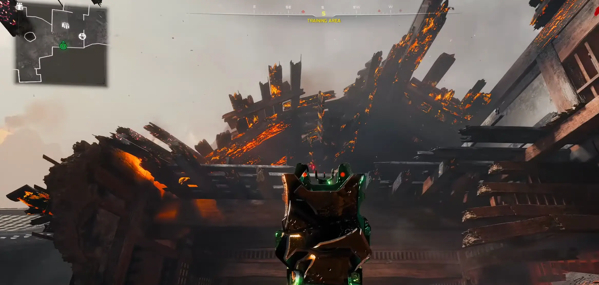
Onsen Baths (Łaźnie): Na krokwi (belce dachowej).
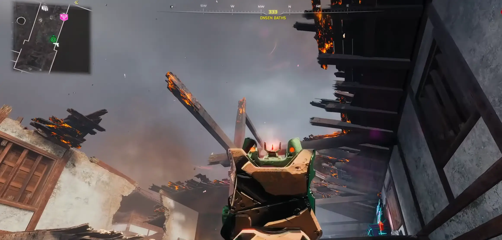
KROK 3: Otwarcie kawiarni w Tea Garden
Gdy zbierzesz wszystkie myszy i wystraszysz koty, udaj się do Tea Garden.
Spójrz na dach budynku – zobaczysz tam wszystkie uratowane koty.
Wpatruj się w nie przez kilka sekund. Pojawi się biały błysk i otrzymasz darmowy Perk.
Wrota do Nico Cat Café staną otworem! Wejdź do środka, by zobaczyć te słodkie bestie w ich naturalnym środowisku.
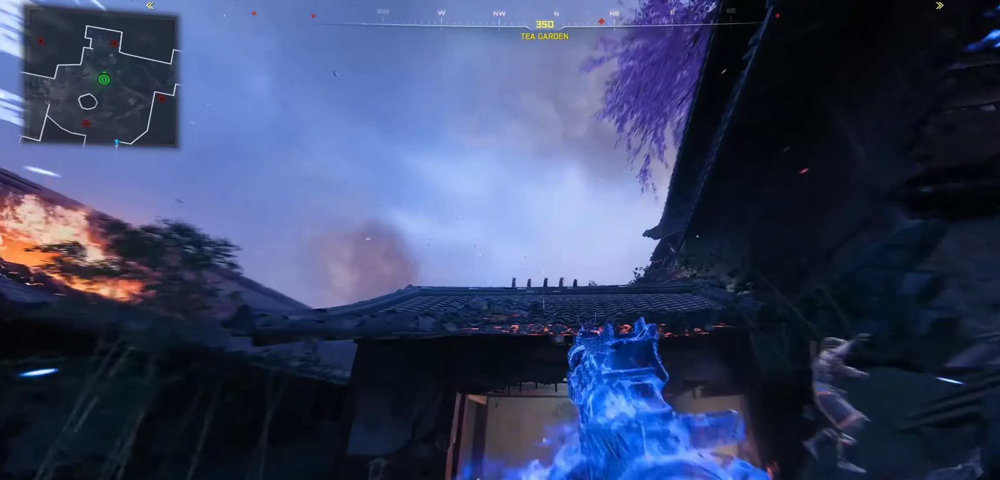
NAGRODA
W kawiarni znajdziesz stół z zebranymi myszami. Wejdź z nimi w interakcję, aby zgarnąć masę darmowego łupu oraz Mystery Perk.